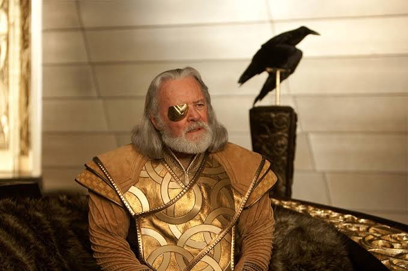

ソー
アスガルドの第一王子 // 雷神
無敵のハンマー「ムジョルニア」を操る最強の戦士。しかしその傲慢さと身勝手さから父オーディンの怒りを買い、神の力と資格を剥奪され、地球へと追放されてしまう。人間との触れ合いの中で「真の王の資質」を学んでいく。
「これがアスガルド式のおかわりだ」

ロキ
アスガルドの第二王子 // 嘘の魔術師
ソーの義弟であり、優れた魔術と狡猾な知略を巡らせる「悪戯の神」。自身が出生の秘密（ヨトゥンヘイムの氷の巨人の血筋）を知ったことで、父や兄への歪んだ愛憎の念を爆発させ、王座を奪うための陰謀を開始する。
「僕は最初から王になりたかったわけじゃない。ただ、兄さんと対等でありたかっただけだ！」
ジェーン・フォスター
天才天体物理学者
ニューメキシコで異常な天文現象（バイフレストの痕跡）を追う科学者。空から落ちてきた「自称・雷神」のソーと出会い、彼の案内役を務める中で惹かれ合っていく。アインシュタイン・ローゼン橋の実証に命を懸ける。
「魔法？いいえ、それは私たちがまだ解明していないだけの科学よ。」

オーディン
アスガルドの最高神 // 諸界の統治者
ソーとロキの父親であり、九つの世界に平和をもたらした偉大な全能の王。ソーの慢心を戒めるために魔力を奪って追放し、ムジョルニアに「資格ある者がこの力を得る」という呪印を刻む。激務と心労により「オーディンの眠り」についてしまう。
「お前は王に値せん！持てる力を剥奪し、追放する！……このハンマーを持つ資格がある者、その者がソーの力を得るであろう。」